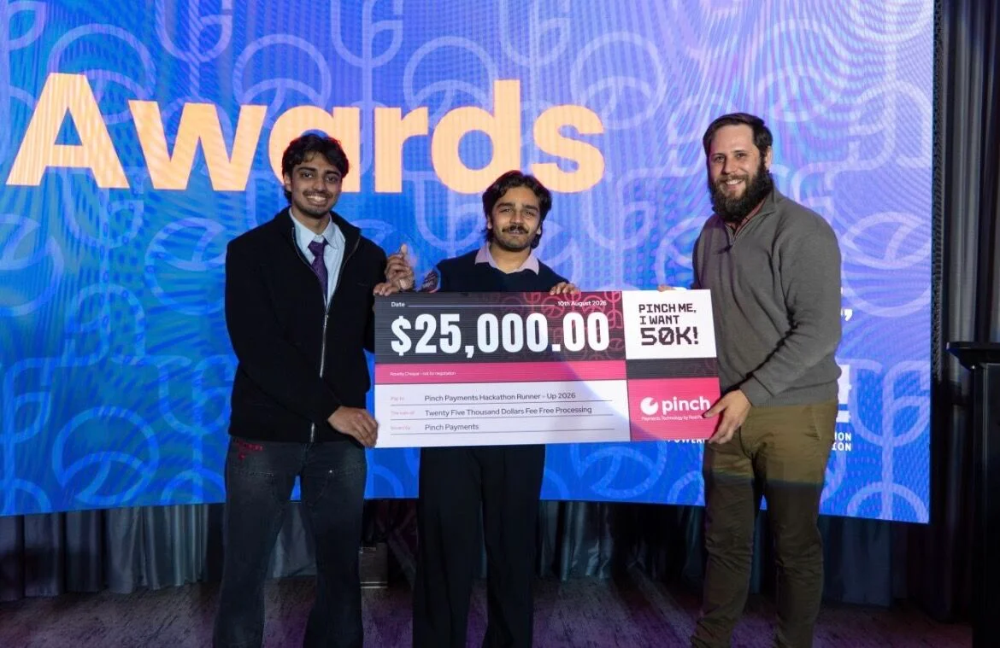
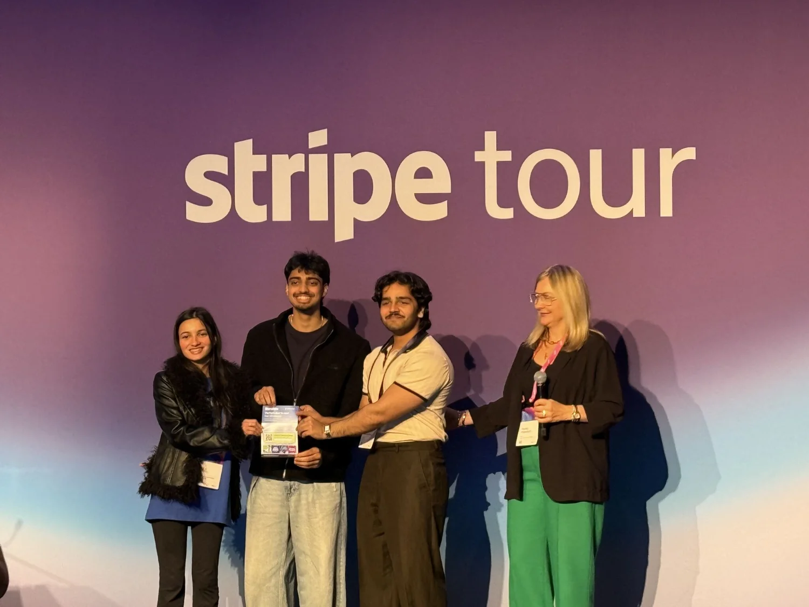

See what’s on right now
An afternoon, a weeknight, a slow Sunday — venues cut the price on the hours they would rather not sit empty. Everything on the feed is live now, with the distance and the closing time on the card.
Whenever you’re free, Sydney venues cut the price on the hours they would rather not sit empty. You see what is on, what it costs and when it ends.
Join the waitlistAn afternoon, a weeknight, a slow Sunday — venues cut the price on the hours they would rather not sit empty. Everything on the feed is live now, with the distance and the closing time on the card.
You see what a slot costs before you tap. No vouchers, no codes to apply, no minimum spend.
Send one link. Everyone ranks their top three. The winner becomes a single booking, split between you.
You pay part of the total to claim the slot. The rest is charged when your code is scanned at the venue.
An animated field of points standing for past bookings. It begins as a formless drifting cloud, settles into an ordered lattice as bookings accumulate, then lifts into a curved surface of fill rate against discount and hour of the evening. The surface has one high point: past that discount a venue gives away margin without filling any more seats. That high point is the discount Impulse recommends, shown here as a worked example — Lane & Co. on a Tuesday, thirty per cent off with five lanes free between eight and ten, expected to bring in eight to twelve players and about three hundred and ten dollars more on the session.
Twenty per cent on a Tuesday, half price when it is quiet. The number is picked by feel, and nobody finds out what it should have been.
What the venue offered, what it filled, the night, the hour. One booking says nothing on its own.
Discount against hour of the evening, and how full the room got. A few hundred bookings and the shape is unmistakable.
One high point on the surface. Past it, a venue gives away margin for seats it would have filled anyway.
PREDICTION
8–12 players+$310 takings
![Pinch Me, I Want 50K!]()

![Startmate]()

We open Sydney one suburb at a time. Tell us where you are and what you do, and you go on the list for that area.
You were invited by
Share your link to move up — top 50 become Founding Members
You choose the discount, the window and how many spots. We bring you people deciding what to do with a free hour. Pilots run three months, free, with no lock-in and no new hardware.
Talk to us →